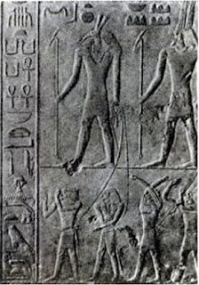
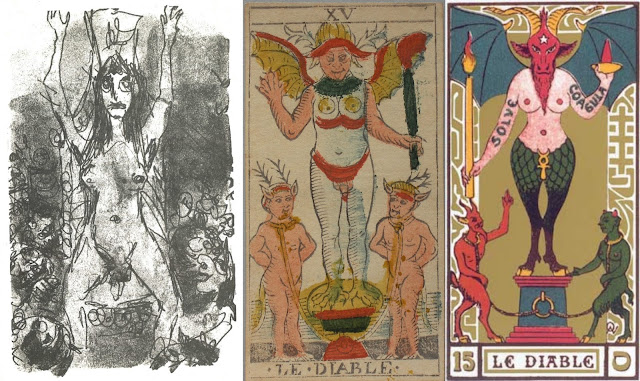

Devil
Early Devil cards
Out of all the cards in eight partial hand-painted Visconti-Sforza decks, there survives no Devil card. There is also none in the Visconti deck earlier, or the d'Este or “Charles VI” packs of Ferrara and Florence. We cannot assume that there never was one, however. Fearful owners may have removed them, after the Inquisition had extracted confessions from women accused of witchcraft that the card was used in a spell-casting ritual. The account can be read in an Inquisition document from Venice as well as other accounts of the time collected by Andrea Vitali (http://www.letarot.it/page.aspx?id=277#, http://www.letarot.it/page.aspx?id=323#).

A variant from the same period has a hair-covered wildman (Rosenwald sheet, far right), from a type frequently depicted in the 15th and 16th centuries, especially in connection with coats of arms, as in the example, near right, from the German engraver Schongauer, c. 1480.
Another version lacks a pitchfork and instead has a victim in its mouth. This type had been popular in representations of hell, as for example at the Bolognini Chapel of the Basilica of San Petronio in Bologna, seen at left below. The Devil card in the center is probably from Bologna. The card on the right is from a 16th century deck produced by one "M. Agnolo Hebreo", whose name is printed on the back of the card, the only one by him known.
 One 16th century version, in what is called the Leber tarot for a previous owner, is in a deck whose trumps use Greco-Roman mythological motifs; the Devil card depicts Pluto (the Greek Hades) abducting Prosperine (Persephone). Underneath is the motto Perditorum Raptor, i.e. Ravisher of the Lost.
One 16th century version, in what is called the Leber tarot for a previous owner, is in a deck whose trumps use Greco-Roman mythological motifs; the Devil card depicts Pluto (the Greek Hades) abducting Prosperine (Persephone). Underneath is the motto Perditorum Raptor, i.e. Ravisher of the Lost. If the setting is hell, we might wonder what such a card is doing as only the 14th or 15th card of a sequence of 21 or 22, as hell was considered a destination where nothing more could happen except endless punishment. Perhaps it is meant as one eventuality for the soul after death. Alternatively, it is more like Purgatory. We might think here of the "Hell" panel of Bosch's Garden of Earthly Delights (at far right above). Although its Satan does eat his victims, as on the Beaux Arts card, they come out good as new on the other end. Moreover, black ravens and gas seem to escape them on the way down. They are thus purer coming out than before. Bosch's apparatus, reminiscent of a giant toilet, also suggests alchemical or metallurgical apparatus, for the transmuting or refining of metals.
For a hell immediately after immortality, followed by a release from hell, we might also think of the last three days of Holy Week. The wine of Christ's blood and the water pouring out of his side occur on Friday, which is the day of the sacrifice that redeems humanity from original sin. Then the next day, in holy tradition if not the gospels themselves, there is the "harrowing of hell". This is even in the Apostles' Creed, which says of Christ (http://www.vatican.va/archive/ccc_css/archive/catechism/credo.htm):
...passus sub Pontio Pilato, crucifixus, mortuus, et sepultus, descendit ad inferos, tertia die resurrexit a mortuis,
[He] suffered under Pontius Pilate, was crucified, died, and was buried. He descended into hell; on the third day he rose again from the dead; .Apocryphal tradition, as expressed in the Gospel of Nicodemus, says more about the "descensus ad inferno", that Christ broke the doors down and rescued the just souls in Limbo, the upper part of Hell. It relates (Ch. 16:18-19, at https://www.sacred-texts.com/bib/lbob/lbob10.htm):
...the mighty Lord appeared in the form of a man, and enlightened those places which had ever before been in darkness, And broke asunder the fetters which before could not be broken; and with his invincible power visited those who sate in the deep darkness by iniquity, and the shadow of death by sin.Jesus then proceeds to conquer the prince of hell, after which, Chapter 19, verses 1-2:
THEN Jesus stretched forth his hand, and said, Come to me, all ye my saints, who were created in my image, who were condemned by the tree of forbidden fruit, and by the devil and death; Live now by the wood of my cross; the devil, the prince of this world, is overcome, and death is conquered.Taking the saints by his hand, he leads them to Paradise. The moment was quite popular with artist from the Middle Ages onward. A representative example is at right, in a fresco by Fra Angelico done in the period when he decorated the Convent of San Marco in Florence, 1436-1445. We can see the door pushed onto the floor, where it has crushed one of the devils. Another devil, at left, flees the scene.
Another way of seeing the card's place in the sequence is by placing the Devil's domain not, or not only, below the earth but in the sphere of air, where their bats' wings allow them to fly about and grab souls at death, so as to drag them down to hell, or else accompany witches to their nefarious gatherings. This is in accord not only with the teachings of the Church but also with Platonic teachings. In this vein Francesco Piscina, writing in c. 1565, says of the card (Caldwell, Depaulis, and Ponzi, Explaining the Tarot, pp. 22-23, correcting slightly their translation):
A parendo ormai all'Autore d'haver posto imagini & essempli a bastanza di cose mortali e terrene, descende a por figure di cose più degne cioè celesti, ma per che secondo la dottrina de Filosofi la Natura non sopporta le mutationi troppo repentine, ne che si trapassi da l'un estremo all'atro senza debito mezo, perciò prima ch'ascendere alle cose celesti come termine estremo delle terrene pone essempli de Demoni, come che quasi essi se ben sono figliuoli de gli Dei come Melito interrogato da Socrate respose cose essere, non però sono veramente ne terreni ne celesti. Poscia che etiamdio e stato opinione di molti, & ispitialmente de Platonici, che siano i Demoni Spiriti che stanno fra l'Aria & che siano come certo mezo fra i Dii e gl'huomini.Meletus was the prosecutor at Socrates’ trial in Plato’s Apology. Socrates asserts that the Daemoni are either “gods or children of gods” (27d), and Meletus agrees. It is part of Socrates' defense against the charge of atheism, because he believes that one daemon in particular helps to keep him from making bad decisions. The doctrine that demoni are “in the middle between gods and men” is found in the Symposium (202e). By the time of the Roman Empire, Platonists such as Apuleius (Augustine, City of God, Book 8 Chapter 15, discussing Apuleius) had taken the next step of locating the demoni in the air. Similar to Piscina is Alciato in 1544, Milan or Pavia, who called the card "daemon".
(Appearing to the author to have put enough images and examples of mortal things, he moves to placing figures of worthier things, i.e. celestial ones. But since according to the Philosophers Nature does not allow changes that are too sudden, nor that move from one extreme to the other without a due mean, before ascending to celestial things, he places as the extreme end of earthly things the examples of Demons [Demoni], if they are children of the Gods, as Meletus responsed to Socrates' question, being things neither earthly nor celestial. It has been the opinion of many, and especially the Platonists, that the Demons are Spirits that are in the Air & are a certain mean between Gods and men.
In the Noblet card, which is the earliest known of the so-called Tarot of Marseille, there are three dots on one wing and two on the other. In number symbolism of the era, deriving from the Pythagoreans as reported by Aristotle, even numbers were considered feminine and the odd numbers masculine. This suggests what we can confirm with our eyes, that that the devil is a hermaphrodite. It also supports what we could suspect even in the earlier cards, that the two faces (one on the head and the other on the abdomen) were male and female.
The idea of one person having characteristics of both genders was anathema to the Church. For example, part of the evidence against Joan of Arc, burned for witchcraft, was that she wore men's clothing and as a warrior was taking a male social role.
The ropes around their necks is taken from depictions of the Devil with the damned, for example at a church in Issoire, France, from the 12th century (http://www.art-roman.net/issoire/issoire2.htm, found by "Fauvulus" on Tarot History Forum). Another example, pointed out by Marco Ponzi, is the Last Judgment at Orvieto Cathedral, c. 1500, where devils are shown binding the damned. It also suggests the fetters forcing prisoners to stare at the cave wall instead of toward its entrance, in Plato's allegory of the cave (Republic Book VII, 511a); the fetters prevent the prisoners from realizing that the shadows they see on the cave wall are only shadows, themselves made by puppets being manipulated in front of a fire. In the darkness of the cave, a metaphor for the world of the senses, we mistake shadows for real things and have no awareness otherwise until, with great pain, we force ourselves to turn around and look toward the light.
Court de Gebelin identified the large figure on the Tarot of Marseille card as Typhon, the evil brother of Osiris, whom the Egyptians called Set or Seth. The name Typhon is due to the Greek practice of assigning the name of a Greek god to each of the Egyptian ones, as though it was the same god in two places. According to the Greek myth most of the gods fled from Typhon by going to Egypt and disguising themselves. In that case it would be perfectly natural to assume that Typhon was a Greek or Egyptian precursor of the Christian Devil, as a deity about whom only evil was said.
Actually, I suspect that the personage on the Devil card was identified with Typhon, at least the Greek one, even before de Gebelin. The Greek divinity was a monster whose hair was made of serpents. Correspondingly, the card in the expanded Florentine version of tarot known as minchiate, the Devil was typically shown with serpents extending from his waist.
For the Egyptian Typhon, there is something else. In 1618 Michael Maier put out an illustrated alchemy text with a figure marked "Typhon" on the title page. It has a torch, breasts, and perhaps a face on the torso. As such it is much like the Devil card of the time. It is not the Christian Devil, but perhaps these were enough, especially given the torch, to associate the Tarot torch-bearer with the evil principle in Plutarch's Isis and Osiris, Osiris's evil brother "Typhon", known elsewhere as Seth, even before de Gebelin made the identification. (I owe this association between the card and this frontispiece to Adam Forrest.) This evil brother, according to Plutarch, was none other than a personification of a part of the Soul of the Universe, a part that is "innate, in large amount, in the body and likewise in the soul of the Universe, and is always fighting a hard fight against the better" (sect. 49). It corresponds to one of at least two world-souls in Plato's Laws (896E), of which, Plutarch (sect. 48) quotes Plato, "the one is beneficent, and the other is opposed to it".
The title of Maier's book is Secret of Secrets, i.e. Greco-Egyptian Heiroglyphics. The term "hieroglyphic" at that time did not refer to Egypt in particular. The cards were already called “hieroglyphs”, meaning signs with hidden meanings, in the 16th century (in the Anonymous Discourse, on p. 53 of Caldwell, Depaulis and Ponzi, Explaining the Tarot). But with the words "Greco-Egyptian" Maier does locate these secrets in Greek Egypt. Notice also the pail of water that Isis is carrying: it is the water that breaks the drought caused by Typhon’s heat. It is also the lady of the Star card, the water-carrier.
In the case of the Dionysian mysteries, Livy in his History of Rome wrote that people were conducted through secret initiation rituals in the dark; such scenes, with ropes to lead the candidates, could be seen in 15th century Italy on Roman sarcophagi.
 There is also Apuleius's account of an Isis initiation in the Golden Ass. The protagonist Lucius recounts at the end how in his initiation he "trod the gates of Proserpine" -- in other words, the entrance to Hades, normally reserved for the dead -- "approached the gods below and the gods above" and "at midnight saw the sun shining in all his glory" (Lindsay trans. p. 249). The "gods below" turn into the Devil in Christianity. And then after two night-time cards, the Star and the Moon, comes the Sun in all its glory. This whole part of the sequence suggests Egyptian mysteries. It may have been an account of an Isis ritual that put the Devil in the cards in the first place.
There is also Apuleius's account of an Isis initiation in the Golden Ass. The protagonist Lucius recounts at the end how in his initiation he "trod the gates of Proserpine" -- in other words, the entrance to Hades, normally reserved for the dead -- "approached the gods below and the gods above" and "at midnight saw the sun shining in all his glory" (Lindsay trans. p. 249). The "gods below" turn into the Devil in Christianity. And then after two night-time cards, the Star and the Moon, comes the Sun in all its glory. This whole part of the sequence suggests Egyptian mysteries. It may have been an account of an Isis ritual that put the Devil in the cards in the first place.The Marseille image (at left, Conver 1760) combines various other images: the bat is associated with darkness; the harpy with hell (e.g. in Dante's Inferno XIII); the horns with various horned gods (Pan, Dionysus, etc., as well as the horns of the stag, now associated with the locked horns of the fight for sexual favor), all of whom would be devils to the Church.
A similar motif is on an Egyptian relief that Brian Innes reproduces in his book The Tarot, p. 48. It is from the wall of a causeway to a minor pyramid at the Egyptian burial complex at Saqqara (it is in a book on Egyptian antiquities; unfortunately I cannot now find the reference). Near Cairo, such reliefs might have been copied by Egyptian entrepreneurs and sold in the marketplace to European traders. It shows a god with a strange animal-head characteristic of , the god whom Plutarch calls "Typhon", holding Egypt’s enemies captive. He is not the only god doing this, as another god is right behind him. They are taking captives to the Pharaoh, who will decide their fate.
For Pan as a devilish tempter, there is a Roman sarcophagus in which Pan shows Dionysus his first sight of the girl he will marry, the sleeping Ariadne (below left). That this sarcophagus was known in the 15th century, and that the standing figure was taken as Pan, is indicated by a similar scene in the illustrated romance Hypnerotomachia Porphilii, published in 1499 Venice (the word "Panton" in Greek letters appears below the image). The association to Pan in particular may have been due to a passage in Philostratos, describing the scene as though in a painting or relief: "...even Pan checks his wild dance that he may not disturb the maiden's sleep" (http://www.theoi.com/Georgikos/Ariadne.html). On the sarcophagus, that the face of the sleeping woman is unfinished suggests to scholars that it was intended as a tomb for some female initiate into the cult but not actually used.

On these Roman-era sarocophagi there are also a couple of reliefs showing a man submitting to another man, an act of ritual humiliation. The humiliation of the proud is an important task for Satan in the book of Job and for various agents of the gods (the Furies, the Sphinx, etc.) in Greek tragedy.
In this connection we may recall the portrayal of Satan in Judaism. A Satan was an "accuser," who enumerated a person's sins before the Celestial Court. Seth, bringing the captives to the Pharaoh, is in the same role. Moreover, there is the portrayal of Satan in the Book of Job, where he acts on behalf of God, with God's full permission, carrying out the tests that God knows Job will pass. The more suffering Satan inflicts, the nobler Job proves to be.
In Seth's case, he inflicts suffering on the captives, but it is all for the glory of Egypt and Pharaoh. Perhaps he is even giving them a chance to redeem themselves, by the nobility of their response to his humiliation of them. We are at the heart of the "problem of evil”. It is possible that the card-makers seeing a representation of the Egyptian relief and decided it was an Egyptian prefiguration of the Judeo-Christian Satan.
Etteilla and modern occultism
For Etteilla, writing in 1785, the card was not necessarily, or even primarily, of an evil force. He says in his Third Cahier, for his card 14, which is much like the TdM Devil card (original at http://tarotforum.net/showthread.php?t=180963; translation mine):
14. Le Diable. Les Egyptiens, par ce mot Diable, ou Démon, n’entendaient pas des Esprits infernaux enchainés dans l’abîme, mais un homme dont la science surpassait de beaucoup celle des autres; enfin, qui savait tout par don divin, ou par une étude interpassante. Tels étaient les Bracmanes, les Gymnosophistes, les Druides, &c. &c. Ce Hiéroglyphe signifie, force majeure, dans tout ce qui regarde les choses de la vie humaine.You will have noticed that the keywords for this card is "Force Majeur", both upright and reversed. This is the phrase I translate as "Superior Force" and can refer either to the one who exerts this force or the victim of such force, in which case it is similar to "act of God" in English law, that is, a disaster that could not have been prevented by human agency, such as an earthquake but not war. "Force majeur" is also translated "Absolute necessity". For a detailed explanation, see "Kwaw" at http://tarotforum.net/showpost.php?p=3235242&postcount=14.
(14. The Devil. The Egyptians, by this word Devil, or Demon, did not understand infernal Spirits enchained in the abyss, but a man whose science surpassed many others; finally, who knew everything by divine gift, or by prolonged [interpassante] study. Such were the Brahmins, the Gymnosophs, the Druids, etc., etc. This Hieroglyph means superior force, in everything concerning the things of human life.)
Etteilla's accunt of the card profoundly influenced the founder of modern occultism Eliphas Levi, who wrote in his 1856 Dogme et Rituel. de la Haute Magie (originally y 1856, p. 209 of 1930 edition):
LE DIABLE, le bouc de Mendès ou le Baphomet du temple avec tous ses attributs panthéistiques. Cet hiéroglyphe est le seul qu'Etteilla ait parfaitement compris et convenablement interprété.The phrase “goat of Mendes” refers to a passage in Herodotus's History (II.42) in which the historian describes a god with the head and fleece of a goat worshiped at that place, as opposed to one of similar standing with the head and fleece of a ram, worshiped at Thebes. For Levi the goat also refers to two goats that he says were part of an ancient Judaic rite, a “pure” one who was sacrificed and an “impure” one who was sent into the desert. The one sacrificed corresponds to the sacrificial lamb of later times. For Levi the parallel with Christ is obvious.
(Hieroglyph. THE DEVIL, the goat of Mendes or the Baphomet of the temple with all his pantheistic attributes. This hieroglyph is the only one that Etteilla perfectly understood and properly interpreted.)
By "Baphomet" he means what the Templars were accused of worshiping. Levi attests that this Baphomet was not the evil creature that he wass made out to be. In fact he is (1930 ed, p. 209):
...bien celle du dieu Pan, le dieu de nos écoles de philosophiemoderne, le dieu de théurgistes de l'école d'Atexandrie et des mystiques néoplatoniciens de nos jours, le dieu de Lamartine et de M. Victor Cousin, le dieu de Spinosa et de Platon, le dieu des écoles gnostiques primitives le Christ même du sacerdoce dissident.Levi constructs his own image of Baphomet, which he put as the frontispiece to vol. 2 of his book. He describes in detail how he interprets the complex image (pp. 211-212):
(...indeed that of the god Pan, the god of our schools of modern philosophy, the god of the theurgists of the school of Alexandria and of the mystic Neoplatonists of our day, the god of Lamartine and Victor Cousin, the god of Spinoza and Plato, the god of the primitive Gnostic schools, the same as the Christ of the dissident priesthood.).
Le bouc qui est représenté dans notre frontispice porte sur le front le signe du pentagramme, la pointe eu haut, ce qui suffit pour eu faire unsymbole de lumière il fait des deux mains le signe de l'occultisme, et montre en haut la lune blanche de Chesed, et en bas la lune nôtre de Géburah. Ce signe exprime le parfait accord de la miséricorde avec la justice. L'un de ses brasest féminin, l'autre masculin, comme dans l'androgyne de Khunrath dont nous avons dû réunir les attributs à ceux de notre bouc, puisque c'est un seul et même symbole. Le flambeau de l'intelligence qui brille entre ses cornes, est la lumière magique de l'équilibre universel; c'est aussi la figure de l'âme élevée au-dessus de la matière, bien que tenant à la matière même, comme la flamme tient au flambeau. La tète hideuse de l'animât exprime l'horreur du péché, dont l'agent matériet, seul responsable, doit seul et à jamais porter la peine: car t'âme est impassible dea nature, et n'arrive à souffrir qu'en sematérialisant. Le caducée, qui tient lieu de t'organe générateur, représente la vie éternelle; le ventre couvert d'écailles c'est l'eau le cercle qui est au-dessus, c'est l'atmosphère; les plumes qùi viennent ensuite sont l'emblème du volatile; puis 1'tmmanité est représentée par les deux mamelles et les bras androgynes de ce sphinx des sciences occultes.
(The goat on the frontispiece bears on its forehead the sign of the pentagram, the point on top, a symbol of light, his two hands forming the sign of occultism, the one pointing up to the white moon of Chesed, the other to the black moon of Geburah. This sign expresses the perfect harmony of mercy with justice. One of its arms is feminine, the other masculine, like those of the androgyne of Khunrath, the attributes of which we had to unite with those of our goat because it is one and the same symbol. The flame of intelligence shining between its horns is the magic light of universal equilibrium, the image of the soul elevated above matter, even as the flame, while being tied to matter, is tied to the torch. The hideous head of the beast expresses the horror of sin, whose material agent, alone responsible, alone has to bear the punishment; because the soul is imperturbable by nature and can only suffer in materializing. The caduceus, which takes the place of the genital organ, represents eternal life; the belly covered with scales is water, the semi-circle above it the atmosphere; the feathers that follow are the emblem of the volatile. Humanity is then represented by the two breasts and the androgynous arms of this sphinx of the occult sciences.)

Khunrath's image does indeed show an “androgyne” – i.e. a figure with two heads – who has “solve” and “coagula” on its arms; it is in his Amphitheatrum sapientiae aeternae, Hamburg, 1595 (online). Where the Church saw abomination, Levi saw harmony, balance, and inclusiveness, embracing all of the four elements and both sides of the Tree of Life (of which Chesed, or Love, on the right, and Gevurah, Severity, on the left, are the most representative examples). And unlike in Christianity, the soul only suffers from sin while in the body, because the body alone is responsible.
Arcane XV. Lettre Xiron (X). Nombre 60. X-60 exprime, dans le Monde divin, la Prédestination. Dans le Monde intellectuel, la Mystere. Dans le Monde physique, l'Imprévu, la Fatalité. .He advises, rather tautologically:
L'arcane XV est figuré par Typhon, Génie des catastrophes, s'élevant d'un gouffre embrasé et secouant des deux hommes enchaînés à ses pieds. C'est l'image de la Fatalité qui éclate dans certaines vies l'éruption d'un volcan, et qui enveloppe les grands comme les petits, les forts comme les faibles, les plus habiles comme les moins prévoyants, dans l'égalité du désastre.
(Arcanum XV: [Letter Xiron, (X) – Number 60]: Typhon: Fate. X-60 expresses in the divine world predestination, in the intellectual world Mystery; in the physical world the Unforeseen, Fatality.
Arcanum XV is represented by Typhon, the spirit of catastrophes, who rises out of a flaming abyss and brandishes a torch above the heads of two men chained at his feet. It is the image of Fatality which bursts into certain lives like the eruption of a volcano, and overwhelms great as well as small, strong and weak, the cleverest as well as the least perceptive, equally in disaster.)
Cesse de croire à ta sagesse et à ta force, si Dieu ne t'a point permis de saisir la clef des arcanes qui enchaînent la FatalitéIn other words, be humble and don’t think you can outwit Fate. Pray that God will give you the wisdom to see through its temptations. Christian is probably thinking of Oedipus and the temptations that the Sphinx held before him, of dominion and love, as well as the punishment meted by Apollo for thinking to escape his decrees. It is again the lesson of the Wheel of Fortune.
Cease to believe in your wisdom and your strength, if God has not granted you the key to make a prisoner of Fate.)
 It took until 1896 for Christian's "Egyptian" interpretation of the tarot trumps to be illustrated with appropriate Egyptian images, taken from the Egyptian artifacts and artists' sketches of tomb paintings that had been flooding Paris and elsewhere since Christian's time (above left, by artust Otto Maurice Wegener in collaboration with writer Robert Falconnier). The central figure is probably derived from the Dendera Zodiac, which had been removed from the ceiling at that site in egypt and put on display at the Louvre. In the center (above right) it shows what would have been identified as a cross between a hippopotamus and a crocodile, animals that Plutarch said were associated with Typhon (On Isis and Osiris sect. 50). The little mice below Typhon on the card were probably modeled on the reliefs of Nubian prisoners (above) etched into the sandstone of Abu Simbel, a complex discovered by Europeans in 1813 and extensively publicized by the late 1820s (above right).
It took until 1896 for Christian's "Egyptian" interpretation of the tarot trumps to be illustrated with appropriate Egyptian images, taken from the Egyptian artifacts and artists' sketches of tomb paintings that had been flooding Paris and elsewhere since Christian's time (above left, by artust Otto Maurice Wegener in collaboration with writer Robert Falconnier). The central figure is probably derived from the Dendera Zodiac, which had been removed from the ceiling at that site in egypt and put on display at the Louvre. In the center (above right) it shows what would have been identified as a cross between a hippopotamus and a crocodile, animals that Plutarch said were associated with Typhon (On Isis and Osiris sect. 50). The little mice below Typhon on the card were probably modeled on the reliefs of Nubian prisoners (above) etched into the sandstone of Abu Simbel, a complex discovered by Europeans in 1813 and extensively publicized by the late 1820s (above right).The next major occultist writing about the tarot after Christian was Papus, in his 1889 Tarot des Bohémiens (Tarot of the Bohemians), pp. 170-172 (pp. 164-167 of translation). He essentially combines Christian and Levi. On the one hand the card represents “the universal destroying force” (la force destructrice universelle); the torch is “the symbol of Black Magic and of Destruction” (la symbole de la Magie noire et de la Destruction), the wings those of “the God of Evil” (le Dieu du mal), and the ring in the cubic block on which the figure stands symbolizes “the domination of Matter (the Cube) over Spirit (the Sphere)” (la domination de la Matière (le Cube) sur l'Esprit (la Sphere)). The card thus symbolizes “Fate, result of the fall of Adam-Eve” (La Fatalité résultat de la chute d'Adam-Eve). Yet “The Devil represents in every comogony this mysterious astral force” (Le Diable représente, dans toute les cosmogonies, cette mystérieuse force astrale), so that the card represents “the astral fluid which individualizes” (le fluide astral qui individualise). It is also “the dragon of the threshold (le Dragon du seuil), apparently that separating earthly from divine realms. None of this is explained.
A.E. Waite, in his Pictorial Key to the Tarot of 1911, explicitly distanced himself from Levi, and also, although in general aligned with Christian, criticizes one remark by that predecessor:
With more than his usual derision for the arts which he pretended to respect and interpret as a master therein, Éliphas Lévi affirms that the Baphometic figure is occult science and magic. Another commentator says that in the Divine world it signifies predestination, but there is no correspondence in that world with the things which below are of the brute. What it does signify is the Dweller on the Threshold without the Mystical Garden when those are driven forth therefrom who have eaten the forbidden fruit.The “dweller on the threshold” is comparable to Papus’s “dragon of the threshold”. For Waite it appears to be the angel who guards the Garden of Eden, to which the mystic desires to return.
It is worth noting the visual differences between Waite’s card and that drawn by Levi. Waite describes his as follows (http://www.sacred-texts.com/tarot/pkt/pktar15.htm); when saying that “Adam and Eve after the Fall” are on the fifth card, surely he means the sixth card, which is the one that shows the Tree of Knowledge and its serpent):
The right hand is upraised and extended, being the reverse of that benediction which is given by the Hierophant in the fifth card. In the left hand there is a great flaming torch, inverted towards the earth. A reversed pentagram is on the forehead. There is a ring in front of the altar, from which two chains are carried to the necks of two figures, male and female. These are analogous with those of the fifth card, as if Adam and Eve after the Fall. Hereof is the chain and fatality of the material life.In Levi’s image, there is no such benediction. The fingers merely point to the two moons, which Waite has omitted. Levi’s torch is not pointed down, as is Waite’s, but up. Likewise Levi’s pentagram is not reversed: the point is up rather than down. Finally, there are no “COAGULA” and “SOLVE” or the apparent circulation of energy above the figure’s head. Where Waite’s figure has negative connotations, therefore, Levi’s does not.
Much the same can be said about Paul Foster Case’s version of the card, which is essentially the same as Waite’s. For Case, too, the Devil is the symbol of illusion, namely the illusion that the material world is all there is. But in his case this same figure also holds for us keys to the liberation from the Devil’s bondage (Tarot Fundamentals, Lesson 34, page 1) .
Yet for Case it is a necessary illusion, for it is by grappling with this illusory world that one learns about its underlying reality, the “Astral fluid”, which the adept can master and thus, more than the exoteric scientist, by its means control appearances. He says (34-9):The central figure is an androgyne goat, having the wings of a bat, the arms and hands of a man, and the legs and feet of an eagle. The wings refer to the designation of the Devil as "prince of the power of the air." They indicate a subtle energy in the atmosphere, which energy is one of the powers controlled by practical occultists.
The eagle's legs and feet refer to the sign Scorpio, ruled by Mars, which planet is exalted in Capricorn. The Scorpio forces must be purified in the fires of test and trial if we are to be released from bondage.
The arms and hands of the monster are shown in a gesture resembling that made by the Magician. The difference is that the uplifted hand is open, and bears on its palm the astrological symbol of Saturn, signifying limitation.
The arms and hands of the monster are shown in a gesture resembling that made by the Magician. The difference is that the uplifted hand is open, and bears on its palm the astrological symbol of Saturn, signifying limitation.
The position of the fingers of the Devil's right hand is also a contrast to the gesture of esotericism made by the Hierophant. The Devil seems to be saying, "What is visible, What can be grasped by the senses, is all there is."
This is the basic fallacy of materialism. In the symbolism of the Devil's hand it is associated with tbs sign of the planet Saturn, because materialism is the cause of man's worst limitations.
...the appearances which deceive us are necessary to the manifestation of the Life-power.Case concludes (34-6):
The secret of release is to get the pentagram right side up. Man’s monstrous imaginary creation, the Devil, is really none other than God, as God seems to men who have an upside-down conception of the I AM. To know what the Self of man really is dispels the delusion that Spirit is dominated by the elements. When this delusion is overcome, the powerlessness of evil becomes self-evident, and the works of the Devil are destroyed.This last point is an elaboration of something he said earleir (33-11):
Learn to laugh at appearances. Laugh at the notion of a Devil. The most effective resistance to error is ridicule. Laugh at the Devil, and he, and all his angels, will flee.
Laughter is caused by perception of the incongruous. It is but a step from this to the truth that joy results from the perception of the incongruity between appearances of limitation and the truth that man is the immediate agent of the One Identity. Experimental verification of this truth brings an experience of the most intense bliss, far beyond, yet comparable to, the most ecstatic sense-experiences known to man.So let us leave Case here, in the ecstasy of release from limitations.
Papus’s artist and co-theorist Oswald Wirth, writing some 38 years after Papus, is the most faithful to Levi’s image, while also retaining important elements of the Tarot of Marseille card. Wirth's account is more psychological than magical. In defense of the Devil, he says that it is due to him that individuality is born. Otherwise, life simply circulates in a universal flow (Le Tarot des Imagiers du Moyen-Age, 1927, p. 174, Weiser translation as The Tarot of the Magicians, 1980, with some modifications, p. 121):
Envisagée dans son essence commune à tous les êtres, la vie universelle circule sans arrêt, toujours identique à elle-même en s'écoulant avec indifférence d'un récipient dans l'autre. [...] ...mais le Serpent intervint... [...] Cet Adversaire (Satan en hébreu) est le Prince du Monde matériel, qui, sans lui, ne saurait exister, car il est à la base de toute différentiation particularisante. C'est lui qui pousse l'atome à se constituer aux dépens de la substance uniformément éthérée. Il est le différentiateur, l'ennemi de. l'unité; il oppose les mondes au Monde et tous les êtres les uns aux autres. Les ayant incités à vouloir être semblables à Dieu, il leur suggère l'instinct de ramener tout à eux, comme s'ils étaient le centre autour duquel tout doit graviter.It is the nucleus of the atom which differentiates one element from another. Certain combinations of atoms called molecules differentiate types of substances. There is a similar nucleus, or combinations of nuclei, in plants and animals, driving them toward self-preservation. It is that which says “no” to all other centers in favor of one’s own. This is the basis of instinctual life, above all the instinct of self-preservation, but also that of all individualization, as Papus had said, including that of self-conscious human beings. Wirth (original p. 175, trans. p. 122):
(Envisioned in its essence common to all beings, universal life circulates without cease, always identical to itself in flowing indifferently from one recipient into another. ...but the Serpent intervenes... This Adversary (Satan in Hebrew) is the Prince of the material World which, without him, would not exist, for he is at the basis of all particularizing differentiation. It is he who pushes the atom to set itself up at the expense of the substance which is universally ethereal. He is the differentiator, the enemy of unity. He sets the worlds against the World and all beings against one another. Having incited them to be like God, he then indicates the instinct which relates everything to themselves, as if they were the center around which everything must gravitate.)
Le Diable nous possède bel et bien quand nous venons au monde, et il faut qui'il en soit ainsi. Mais cette possession n'est pas définitive, car nous sommes destinés à nous affrancher progressivement de la tyrannie de nos instincts innés.But it is not a matter of simply escaping from the Devil’s clutches.
(The Devil well and truly possesses us when we come into the world, and it must be so. But the possession is not definitive, for we are destined to free ourselves little by little from the tyranny of our innate instincts.)
Le Diable n'est pas aussi noir qu'on le dépeint - il est notre inéluctable associé dans la vie de ce bas monde. Sachons donc le traiter équitablement, non en ennemi systématique et irréconciliable, mais un inférieur, dont les services son précieux.Wirth then goes through the so-called “deadly sins” to show how each, when properly managed, turns into a virtue. He begins:
(The devil is not so black as he is painted: he is our unavoidable associate in the life of this base world. Let us learn how to treat him fairly, not as a systematic and irreconcilable enemy, but as an inferior whose services are precious.)
Retenons nous notre orgueil, afin qu'il se traduire en disgnité, en cette noble fierté qui inspire l'horreur de tout avilissement.Similarly, anger transforms to courage and active energy; sloth becomes needed rest, as well as the time for artistic accomplishment. Gluttony becomes the heatlth-conscious selection of foods and an appreciation for its qualities of taste. Avarice becomes careful economy without spurning the honest love of gain as the efficacious stimulant for work. Lust becomes
(Let us curb our pride so that it appears in the form of dignity, in this noble pride which inspires horror of all baseness.)
...le respect religieux de l'august mystère de rapprochement des sexes. Cessons de profaner ce qui est sacré.But unlike forCase, this transformation is not an expression of freedom from limitation. It is rather the acceptance of limitation through the exercise of moderation.
(...the religious respect of the great mystery of the union of the sexes. Let us cease to profane what is sacred.)
Although in general Wirth dissociates himself from magic here, he does see a kind of magic in sexuality that can be extended to interpersonal interactions generally. The two little satyrs demonstrate it to us, the one on our right with his upraised two fingers drawing down energy from the god, out of the air, so to speak, transmitting it to the other by means of the cords, while the other in touching the pedestal restores that energy to the god.
There is also the necessity of a certain “diabolical ardor” in order “to influence others and in that way act outside of ourselves". Without it we are “cold and impotent”. We see this in the action of the large figure, “especially by his arms which are not tattooed in vain with the words “COAGULA / SOLVE” (original p. 178, translation p. 124):
Sans ardeur diabolique, nous restons froids et impuissants: il nous faut avoir le diable au corps pour influencer autrui et agir ainsi hors de nous-mêmes. Cette action s'exerce par les membres du grand fantôme fluidique et plus spécialement par ses bras, qui ne sont pas en vain tatoués des mots: COAGULA, SOLVE.He then explains the mystery of these two words (original p. 179, translation p. 124):
(Without a diabolical ardor we remain cold and impotent: we need to have 'le diable au corps' in order to influence others and in this way act outside of ourselves. This action is exerted by the limbs of the great fluidic phantom and more especially by his arms, which are not tattooed in vain with the words: COAGULA, SOLVE.)
Le procédé magique consiste, en effet, à coaguler la Lumière astrale, c'est-à-dire l'atmosphère phosphorescente qui enveloppe la planète grâce à l'action de son feu central. Les vivants grouillent au sein de cette clarté diffuse qui éclaire leur instinctivité. En empruntant le bras gauche du Baphomet, nous pouvons attirer à nous la vitalité ambiante vaporisée invisiblement et la condenser en brouillard plus ou moins opaque dans sa fluorescence. C'est la coagulation qui s'opère à la faveur du pôle génital, comme l'indique le symbole hindou de l'union des sexes, que le diable soulève de sa main gauche. Le fluide coagulé charge l'opérateur à la manière d'une pile électrique; mais aucun effet ne se produit tant qu'il n'y a pas décharge autrement dit solution. Ici intervient le bras droit porteur de la torche incendiaire du Baphomet, image des déflagrations véhémentes qui sont à redouter. Pour éviter l'explosion qui bouleverse, affole, ahurit et risque de déchaîner la démence, il convient de capter le courant que détermine l'écoulement graduel du fluide accumulé.Briefly: the left arm draws energy from the "phosphrescent atmosphere which envelopes the planet”. Once internalized – the “Coagula” -- it is sent outward, the “Solve” of the right arm, from the torch. However this must be done in a measured way, not an explosion that “causes panic, stupifies, and risks unleashing madness”.
(The magical process consists, in effect, by coagulating the Astral Light, that is to say the phosphorescent atmosphere that envelopes the planet thanks to the action of its central fire. Living creatures swarm in the heart of this diffuse light which illumines their instinctivity. By borrowing the left arm of Baphomet, we can draw towards us the surrounding and invisiblly vaporized vitality and condense it into mist which is more or less opaque in its fluorescence. It is the coagulation which operates to the advanage of the genital center, as is indicated by the Hindu symbol of the union of the sexes which the Devil raises in his left hand. The coagulated fluid charges the operator like an electric battery; but no effect is produced as long as there is no discharge, otherwise known as solution. At this point the right arm intervenes, bearer of the burning torch of Baphomet; this image of fierce flames is to be feared. To avoid the explosion which wreaks havoc, causes panic, stupifies, and risks unleashing madness, one must harness the current that determines the gradual flow of accumulated fluid.)
It may be of interest that he identifies the raised first two fingers and retracted last two fingers of the small devils with the transmission of energy: towards one, on our right, and away from one, on our left, corresponding to the lingam and the torch. With the right hand it is much like the “V” for victory sign popularized by Churchill and used by politicians ever since.
Jungian interpretations
Sallie Nichols (Jung and Tarot, 1980, p. 251) begins her chapter on the Devil card by quoting an epigram by Goethe:
You have the devil underrated(The German is "Ich kann mich nicht bereden lassen, / Macht mir den Teufel nur nicht klein: / Ein Kerl, den alle Menschen hassen, /Der muß was sein!")
I cannot yet persuaded be:
A fellow who is all behated
Must something be!
In these modern times, we tend to regard the existence of the Devil as a superstition that has gone the way of witches and hobgoblins, suitable for Holloween and horror movies, and who otherwise lives inside those who are totally divorced from their humanity, such as Hitler and other gang leaders. If so, perhaps indeed we are underrating the Devil today.

In this way the Judeo-Christian Devil is more human than the negative supernatural beings that historically preceded him. He is not only the evil Set of the Egyptians, who she says was likened to a crocodile, or the plague-carrying god of early Mesopotamia, or the Babylonian goddess of chaos Tiamat.
In fact, Nichols says:
That the Devil’s image has become more humanized in the course of centuries means, symbolically, that we are more ready now to view him as a shadow aspect of ourselves rather than as a supernatural god or an infernal demon. Perhaps it means it may mean that we are already at last to wrestle with our own satanic underside.

Related to this point are the tails seen on the little devils on the card. She cites Jung (Collected Works, vol. 18, p. 81):
We always forget that our consciousness is only a surface; our consciousness is the avant-garde [i.e. part in front] of our psychological existence. Our head is only one end, but behind our consciousness is a long historical “tail” of hesitations and weaknesses and complexes and prejudices and inheritances, and we always make our reckoning without themThis historical “tail” can make us hesitate from actions in some cases and plunge ahead recklessly in other cases. They “bedevil” our ability to make wise choices and lead us morally astray.
The wings, being those of a monstrous bat, suggest of course that which operates skillfully in darkness. There is also something of the supernatural about them. The bat has the unusual ability being able to maneuver easily in the dark. But scientists have figured out how the bat does this. To understand the Devil, we have similarly to study the unconscious forces of the human psyche.
How does it work? First, we hide our negative traits from ourselves, identifying instead with the part we want to present to the world, our persona. Moreover:
Our own individual emotionalism, bigotry, vindictiveness, violence, and confusion (not recognized and dealt with in our personal lives) now burst forth on a massive scale as world wars, riots, conflagration, and general destruction. For it is a truism of life that when negative aspects of ourselves are not recognized as belonging to us on the inside, they appear to act against us on the outside.So we point the finger of blame at others rather look at ourselves; then the evil escalates. Nichols quotes Andre Gide: “Evil is a thing one does in return.” One commits evil, in the name of good, out of a desire for vengeance for an evil done to oneself. Evil looks like good. All of this is hidden from ego-consciousness, of course.
The next thing she draws attention to is the golden headpiece, which she says is a symbol of his divine origin, presumably as Lucifer. This origin is also suggested by the horns:
Horns are an ancient symbol for new life and spiritual regeneration, and golden antlers are specifically symbolic of divine fire.I do not know of any card besides Marteau's (above right, compared to historical card above left), which she erroneously takes as representative of the historical card, that has golden antlers. However fire is represented well enough in his torch, which she mistakes as a sword.
She goes on to say that the horns are not part of the Devil’s body but are part of the helmet, which he says is “reminiscent of Wotan” and are “part of his godlike office as messenger” (pp. 265-266). As far as I have been able to determine, Wotan, unlike the Roman god Mercury, was never a messenger-god, nor was he portrayed with horns. It is true that the Romans’ third day of the week, Mercury’s day (e.g. the French Mercredi), corresponds to our Woden’s day (Wednesday), but the two gods are not equivalent. Wotan was a god of battle frenzy, eloquence, and prophesy, as well as wisdom, and was also the god that gave life to human beings. What corresponds to Wotan for Jung is the alchemical Mercurius, who similarly was no messenger. Speaking of the spirit that the boy releases in the fairy tale “The Spirit Mercurius” Jung says (Alchemical Studies p. 198):
Our fairytale thus interprets the evil spirit as a pagan god, forced under the influence of Christianity to descend into the dark underworld and be morally disqualified. Hermes becomes the demon of the mysteries celebrated by all tenebriones (obscurantists), and Wotan the demon of forest and storm; Mercurius becomes the soul of the metals, the metallic man (homunculus), the dragon (serpens mercurialis), the roaring fiery lion, the night raven (nycticorax), and the black eagle - the last four being synonyms for the devil. In fact the spirit in the bottle behaves just as the devil does in many other fairytales: he bestows wealth by changing base metal into gold; and like the devil, he also gets tricked.The alchemical Mercurius, however, has aspects of both Christ and the Devil. Speaking of the double nature of Mercurius, he says (Ibid, p. 237):
He is the devil, a redeeming psychopomp, an evasive trickster, and God’s reflection in physical nature.God himself, in the Old Testament, has his evil side, as Nichols points out. She quotes Isaiah 45:6-7:
I am the lord and there is none else. I form the light and create darkness. I make peace and create evil. I the Lord do all these things.His evil-making power is revealed in the Book of Job. To win a bet with Satan, he gives the latter permission to inflict all manner of undeserved loss and suffering on Job so as to test his faith. Then, when Job passes the test, God in his mercy returns to him all that he had lost.
In bringing down the divine fire, however, the Devil is like the Greek Prometheus, whose relationship to humanity was that of giving us the gift of fire, for which he was punished with eternal torment. Satan’s gift was that of encouraging Eve to eat from the tree that God had said (Gen. 2:17) was that of the knowledge of good and evil. Nichols says (p. 256):
Were it not for his inducement to action and knowledge, we would still be like small children, caught in the idyllic round of a secure but limited paradise. Without this devilish involvement in the crucial problems of good and evil, we would have no ego consciousness, no civilization, and no opportunity to transcend the ego through self-realization. Like animals, we would be forever imprisoned within the rigid formulae of automatic behavior.In that case the torch would seem to symbolize the Serpent’s gift. To that extent the Devil is not evil at all. Thus we feel shame when we do something we know is wrong, and good about ourselves when we do what we know is right.
Yet vice even sneaks into virtue. Nichols cites Jung (Psychological Reflections: a new anthology of his writings 1905-1961, ed. Jolande Jacobi, p. 236):
We quite forget that we can be as deplorably overcome by a virtue as by a vice. There is a frenzied, orgiastic virtuousness which is just as infamous as vice and leads to just as much injustice and violence.He is probably thinking of Hitler’s rallies. But it seems to me that this attitude can also appear in the form of cool-headed high-mindedness, most obviously in the case of Nazi-supporting professors in Germany such as Martin Heidegger and Jung’s friend the psychologist J. W. Hauer (on which see Jung's essay "Wotan", online), but also, as the familiar "holier than thou" attitude, with many overtaken by one brand of fundamentalism or another.
On the same page of Jacobi’s book of Jung quotes (Psychological Reflections) is one that demonstrates another problem that undermines virtue: although we naturally want to do good, we are also naturally selfish. Jung says (Ibid):
When in a fit of enthusiasm we begin with the good, our deep-rooted selfishness remains in the background, unsatisfied and resentful, only waiting for an opportunity to take revenge in the most atrocious way.Moreover, consciousness is invariably focused and hence excludes some things from awareness. No matter how conscious we think we are, there is room for the unconscious. It is not only consciousness that needs educating, but the unconscious as well, to keep one from doing unconscious harm. That is why moralists emphasize the cultivation of morality as a habit rather than as a set of individual choices.
Like Wirth, Nichols emphasizes that there is no figure in the tarot that is either all-good or all-bad. All have their negative and positive aspects, and it is one of the strengths of the Marseille tarot that it does not make certain cards all-negative and others all-positive. To do so would be false to the nature of the symbol, which unites opposites into a whole. The Devil has his good points, and the other cards have their negative aspects. Nichols compares the Devil card with the Magician (p. 270):
Most Tarot decks make a sharp distinction between the Good Magician of Trump number one who is painted as light, bright, and positive, and the Bad Magician of card fifteen who carries all the unappetizing negative qualities. But this is not true of the Marseille deck whose characters seem always to present both light and dark elements. We have already observed how the Marseilles Magician [the Chosson is on the near right] with his leminiscate hat and holiday dress, standing casually at the crossroads, appears as an ambivalent character in contrast to Waite’s priestly Magician in his bower of lilies and roses [far right). As one might expect, the Devils pictured in the two decks reflect similar differences. In the Waite deck he is a loathsome, fearful fellow with hairy legs, cloven hoofs and a stern expression. His symbol is the inverted pentagram, hex sign of black magic. If the Devil were so completely repulsive as this fellow, sin would be no problem. By contrast, his counterpart in the Marseille pack (like the Magician) embodies both attractive and unattractive qualities.This is quite in keeping with Jung’s analysis of the nature of symbolism, which unites opposites in one image. In fact he characterized the tarot itself in similar terms (Archetypes of the Collective Unconscious, paragraph 81):
If one wants to form a picture of the symbolic process, the series of pictures found in alchemy are good examples. . . . It also seems as if the set of pictures in the Tarot cards were distantly descended from the archetypes of transformation, a view that has been confirmed for me in a very enlightening lecture by professor [Rudolph] Bernoulli. The symbolic process is an experience in images and of images. Its development usually shows an enantiodromian [i.e. of things turning into their opposites] structure like the text of the I Ching, and so presents a rhythm of negative and positive, loss and gain, dark and light
The Pope is seated on a throne as befits his office. The evil stands on what appears to be an anvil whose ashes have gone dead. He will have us believe that it is he who is the heavenly fire. ...The Pope holds his staff in a ritual manner in a gloved hand bearing the cross patée to indicate that he holds his power in trust for the Church. But the Devil holds his sword haphazardly in a bare claw-like hand, indicating an unconscious egocentric use of power.But this dichotomy does not work. The Pope is the transmitter of dogma that can be helpful wisdom, but also stifling of honest individual inquiry and experience, in which even minor deviations are subject to the severest penalties. Visually, what we see from the acolytes is only rapt attention to someone far above them. And I have already mentioned what appears to be a dagger in back of one of the acolytes on some Marseille Pope cards. As early as the Visconti-Sforza Pope card, his benediction could as well be a gesture of admonition, while his face carries a look of severity rather than mercy. He as much as God in the Garden expects unquestioning obedience.
For more on this card, let us turn to Jung himself in a few extended passages. The Devil card is the one tarot card that he actually talks about in a public forum, not in his writings but in a published lecture series, in particular one of March 1, 1933. He calls attention to a particular detail, one that Nichols only comments on once, to discount it, the breasts, which she says look stuck on): the Devil is a hermaphrodite. He says (Visions Seminar, vol. 2, p. 923):
Now in the Tarot there is a hermaphroditic figure called the diable. That would be in alchemy the gold. In other words, such an attempt as the union of opposites appears to the Christian mentality as devilish, something evil which is not allowed, something belonging to black magic.On the other hand, in alchemy the hermaphrodite was considered an important achievement of their work. It represents the union of two opposite substances, represented in the word "hermaphrodite" by the two gods Hermes and Aphrodite. In that sense (Ibid., p. 924)
...the making of the gold was a philosophical attempt—we would now say a psychological attempt—to produce the valuable thing, the jewel, by mixing the opposites, or mixing the gods, under certain conditions.
Miss de Witt: Then there was the Platonic idea of the two parts of the globe.Plato's expositor on love (not Socrates, who will have the last word, but the comic playwright Aristophanes) relates that these "primordial beings" were split apart by Zeus, who by this means reduced their power after these beings tried to "scale the heights of heaven and set upon the gods" (Symposium 190b). Judeo-Christian readers would not have missed the parallel to God's separation of Eve from Adam and subsequent expulsion from Eden, as well as to the expulsion of the rebel angels from heaven.
Dr. Jung: Exactly. But that idea is not mythological, it is more a sort of ideology. I don't know where Plato found it, I think it was perhaps a philosophical intuition. It is, as you know, the idea of a primordial being that was entirely round, a globe. The globe was thought to be the most perfect form, so it is simply a symbol, showing that the idea of man originally, the eidos or the eidolon of man, was the most perfect form. Then God cut this globe into two parts, so there was a female and a male side who were forever seeking each other; and that is Eros, they try to come together again in order to produce the perfect being. This is like the idea of the development of the soul in the alchemical book which I just showed you. That philosophy is based upon the same unconscious intuition that in sexuality there is this divine being that is perfect, all round, male as well as female.
Jung explains later that he does not mean that the hermaphrodite is already the gold, the goal of the work, but something on the way to the gold. This qualification is later in the lecture, discussing Gustav Meyrink's conception in his novel The Golem (Ibid, p. 933):
...there is an interesting chapter about the hermaphrodite, as a result of Meyrink's occult studies, in which he was very much involved. Naturally he came upon the medieval symbol of the hermaphrodite, and in that story it plays a typical alchemistic role, for the hermaphrodite figures in the art of making the gold. It symbolizes a certain stage of the secret work of alchemy, the attempt to produce the valuable substance. Expressed in psychological terms the precious substance would be what we call a reconciling symbol, the pearl, the jewel, the child, etc. The hermaphrodite is only on the way to that precious substance, it is the stage where the pair of opposites, first represented as animals, are united in a human form, which means that the opposites of our own nature have come together within us in a human form, so that the male and the female are together.The figure of a hermaphrodite is seen in numerous alchemical illustrations, and at various stages of the work, many not looking much like the tarot card. Those that fit the card best are in the Heilige Dreifaltigkeit, originally of c. 1420. There are two similar images, one called the “Luciferian”, “Antichrist” or “Diabolic” hermaphrodite, and the other the “Mercurial” or “Hermetic” hermaphrodite (at left and right below, from a c. 1550 copy in Basel). That Jung knew this work is evident from the fact that the second of the two figures, from a manuscript copy in Munich, appears in his book Alchemical Studies. What corresponds to the Devil card is clearly the first, as it is an earlier stage of the process. Notice the bird-legs on the two-headed dragon, similar to those on the Devil card, as well as, of course, the bat-wings. Adam and Eve coil around the legs of the hermaphrodite like the serpent around the Tree of Knowledge. The hermaphrodite holds a sword on its male side, passing through a crown above. The feminine side merely holds a crown. It is quite a strange image.
This is an important symbol in the Christian tradition also. Of course, it is not canonical, but it was in the Evangel of the Egyptians which still existed and was seen by Origen, the old Greek father. In that Evangel is a conversation between Christ and a certain woman called Salome of whom we know nothing—she is not the daughter of Herod. She asks him when the things she was asking about would come true. And he says: "When ye tread underfoot the husks of shame. When the two become one, and the male with the female. Neither male nor female.” It is the same symbolism you see, meaning a condition above or beyond the mere sex condition. Then the millenium, the Kingdom of Heaven, the perfect all-round condition, the most precious form of existence, the gold state, will be fulfilled. ...
So we can say that the hermaphrodite is usually the symbol that precedes individuation, that precedes the creation of the valuable center, or the precious diamond. Therefore it is still not a satisfactory state, as you see from the alchemistic pictures; that figure with the two heads is too monstrous, there is no absolute liberation. The hermaphrodite shows that man is still torn asunder, he is only on the way to completion, all-roundness. So in Meyrink's Golem, the gate to the magic house, or to the land of the hereafter, consists of a representation of Osiris in the form of a hermaphrodite, and one of the two halves of the gate is male and the other is female. One must first pass through that gate, the stage of the hermaphrodite, to reach the perfect condition.
The association of the hermaphrodite with Mercurius, the alchemist’s Azoth (A to Z, Alpha to Omega), is seen in another image, which appears in the Theoria Philosophiae Hermeticae (1617) by Heinrich Nollius. Before that it was the 5th image in the famous Azoth series attributed to the legendary 15th century alchemist Basil Valentine, of which the earliest printed version is 1559 Paris.
Meyrink's novel, set in late 19th century Prague, describes the image of a hermaphrodite in several passages. Near the beginning it is part of a vision that the narrator receives upon opening a manuscript given to him for repair by a mysterious stranger. A throng of figures somehow forms from words coming out of an invisible mouth, followed by a giant naked woman, whose pulse throbs like an earthquake. Then (1969 German ed., p. 30; 1976 English translation, pp. 11-12)
Ein mann jun ein Weib umschlangen sich. Ich sah sie von weitem kommen, und immer näher brauste der Zug.The "man and woman embracing" is a frequent image preceding that of the hermaphrodite in alchemical illustrations; sometimes they are even in the same illustration, as in the example above from Atalanta Fugiens. The former separate beings have turned into a merger of the two, or else, as in the case of the mythical Hermaphroditus, their child.
Jetzt hörte ichden hallenden Gesang der Verzückten dicht vor mir, und meine Augen suchten das vershlungene Paar.
Das aber hatte sich verwandelt in eine einzige Gestalt und saß, half männlich, half weiblich, -- ein Hermaphrodit -- auf einem Throne von Perlmutter.
Und die Krone des Hermaphroditen endete in ein Brett aus rotem Holz; darein hatte der Wurm der Zerstöring geheimnisvolle Runen genagt.
(A man and a woman were embracing. I saw them come from afar, and nearer and nearer came the throng. Now I heard the singing of the frenzied troop close to me, and my eyes sought out the embracing couple. But they had now turned into a one single form, half male, half female--a hermaphrodite seated on a throne of mother-of-pearl. Its crown terminated in a piece of red wood, on which the Worm of Destruction had carved [literally, gnawed] mysterious runic figures.)

Above left is the illustration of the hermaphrodite done for Meyrink by Hans Fronius (reproduced in the 1969 German edition, p. 31). It seems to me to owe much to the Tarot of Marseille Devil card (center, the Chosson), and perhaps also Wirth's (right). The two had appeared together in Papus's 1889 Tarot des Bohémiens, Fronius's likely source: Meyrink's own description at this place in the novel is rather vague. And unlike Meyrink's fuller description at the end of the novel, as we shall see, Fronius's is somewhat different from the alchemical images. Jung in 1938 would probably not have known the drawing, as it does not seem to have been united with the text until the 1946 edition, of which the 1969 is a reprint. The original 1915 edition had lithographs by Hugo Steiner-Prag, according to the 1976 editor, who reproduces them for the English translation; they do not include one of the hermaphrodite. Toward the middle of the novel, a positive female character for whom the narrator has much affection mentions the hermaphrodite (German p. 215, English p. 115, with my comments in brackets):
"Es gehört mit zu meinen Träumen", fur sie leise fort, "mir vorzustellen, daß es ein Endziel ist, wenn zwei Wesen zu einem verschmelzen, -- zu dem, was -- haben Sie nie von dem alten ägyptischen Osiriskult gehört? -- zu dem verschmelzen, was der 'Hermaphrodit' als Symbol bedeuten mag."This is the novel's explicit explanation of the significance of the hermaphrodite image. The word "Halbgott" (demigod) brings to mind Plato's spherical beings, which presumably, like the demigods of Greco-Roman mythology (Hercules, Cupid, etc.) were immortal, until Zeus split them in half.
Ich horchte gespannt auf: "Der Hermaphrodit --?"
"Ich meine: Die magische Vereinigung von männlich und weiblich im Menschengeschlecht zu einem Halbgott. Als Endziel! - Nein, nicht als Endziel, als Beginn eines neuen Weges, der ewig ist - kein Ende hat."
("One of my dreams," she continued softly, "is to prefigure [or imagine] to myself as an ultimate ideal [literally, goal] the complete fusion of two human beings into what -- have you never heard of the old Egyptian cult of Osiris? -- into what the hermaphrodite stands for in the language of symbolism."
I listened now with the utmost attention. "The Hermaphrodite?"
"I mean by that, the magical union into one single entity of a man and a woman [literally, the magical union of man and woman in the human race into a demigod]. Not, as I said, really as the ultimate goal, but as the beginning of a new way that is eternal--a way without an end.")
Then at the very end the narrator revisits a mysterious house on a hillside near Prague Castle. What he sees is much different from the featureless and perhaps uninhabited house he had seen earlier (pp. 333 and 189):
Die Gartenmauer ist ganz mit Mosaik bedeckt. Türkisblau mit goldenen, eigenartig gemuschelten Fresken, die den Kult des ägyptischen Gottes Osiris darstellen.The doors open to reveal "ein tempelartiges, marmornes Haus" ("a marble house, with all the aspect of a temple", pp. 334 and 190) and a man so much like himself it was "als sähe ich mich im Spiegel" ("as if beholding my own face and figure in the mirror", Ibid); next to him is the woman who had talked with him earlier, who smiles at him and says something to the man (Ibid).
Das Flügeltor ist der Gott selbst: ein Hermaphrodit aus zwei Hälften, die die Türe bilden, - die rechte weiblich, die linke männlich. - Er sitzt auf einem kostbaren, flachen Thron aus Perlmutter - in Halbrelief -, und sein goldener Kopf ist der eines Hasen. Die Ohren sind in the Höhe gestellt und dicht aneinander, daß sie aussehen, wie die beiden seiten eines aufgeschlagenen Buches.
(The garden wall is all covered with decoration in mosaic, of a beautiful Turkish blue background, set with gold, highly stylized frescoes depicting the Egyptian cult of the god Osiris.
The swinging door is the God himself: a hermaphrodite in two halves, the right female, the left male. The figure is seated on a flat, radiant throne of mother of pearl, in semi-relief, and its golden head is in the form of a hare. The ears of it stand up high and close together, giving the semblance of two pages of an open book.)
Dann fallen die Flügel des Tores zu, und ich erkenne nur noch den schimmernden Hermaphroditen.
(Then the swinging doors are closed once more, and all I can see is the gleaming hermaphrodite.)
The old servant who had greeted him and then gone to the couple tells him that the rules of the house do not permit him entrance.
Osiris, to my knowledge, was never portrayed as a hermaphrodite, either in ancient Egypt or in alchemy. My suspicion is that Meyrink has combined the alchemical image with that of the Hapi, a pair of ancient Egyptian gods with masculine dress and features but also one breast (an example is at left below); they were sometimes shown pregnant. They were fertility gods and very much, like Osiris, associated with the Nile flood. Meyrink's head with rabbit ears suggests most likely the lotus stems on the heads of the Hapi, but also the ostrich feathers on the sides of Osiris's crown (middle below) and the donkey-style ears of the Egyptian god Seth/Typhon (at right below).
Jung says more about the opposites involved, this time not in only in terms of male and female but of “hostile brothers” (Jung, op. cit., pp. 934-935):
You see, we usually experience the pairs of opposites outside of ourselves. We hold a certain position, we are right, and the other one is all wrong. Then after a while we become aware, perhaps through dreams or certain wise words instilled by the analyst, that just possibly the opponent is a symbol for oneself, say one's own shadow, and that one is so particularly opposed to him because one is so very much like him. Like the French and German psychology. They are hostile brothers, very much alike only the one says a thing in French and the other says the same thing in German. So when one becomes aware of the fact that one is really one's own worst enemy and contains just what one is fighting outside, that one has that in oneself, that one is both the one thing and the other, then finally one must recognize that the last thing one fights if one is a man is a woman, and the last thing a woman fights is a man. The supreme recognition is that a man is also a woman, and a woman is also a man. And then one is in a mess, for what can one do? There is no one to combat any longer, one can only fight with oneself, which is not very interesting.In his Nietzsche seminar of 1938, Jung takes these thoughts on the Devil as projection a little further. For one thing, he recasts the devil in terms of superior function (Seminar on Nietzsche's Thus Spake Zarathustra, 1935-1938, p. 1187).
You see, our superior function is the devil that takes us away from the lovely things of childhood, because it is the riding animal that takes us right away into the world, that keeps us busy, and then we forget all about that lovely drama which began in our early youth. For then we become sort of professional and one-sided; we get busy, and naturally we forget about ourselves to become acquainted instead with all the possibilities of the world. And so the thing that seemed to us the most useful—and not only seems but actually is the most useful, the most probable thing—turns out to be the very devil when it comes to the question of the self.Here the devil is seen as a force of separation as opposed to unity, which is a good thing in the development of the ego but then gets in the way of the ego’s reconnection with the whole personality (the Jungian Self).
Jung also says more about the situation that arises when one realizes that the devil one sees in another person is really a projection of your own weaknesses or unacknowledged traits. He says it is important not to take it only as a projection. I apologize for the length, but the end result is worth hearing and something I cannot find him saying elsewhere (Ibid, 22 June 1938, pp. 1320-1322):
When the unconscious makes a careful attempt to show a figure as something outside of yourself, you had better take it as something outside of yourself. You see, you are a whole world of things and they are all mixed in you and form a terrible sauce, a chaos. So you should be mighty glad when the unconscious chooses certain figures and consolidates them outside of yourself. Of course that may be in the form of projections, which is not recommendable. For example, perhaps you have a sort of hostile element in yourself that crosses your path now and then, or a poisonous element that destroys all your attempts at a decent adaptation, and it is so mixed up with everything else that you never can definitely lay your hand on it. Then you suddenly discover somebody whom you can really declare to be your archenemy, so you can say this is the fellow who has done this and that against you: you succeed in constructing your archenemy. Now, that is already an asset which makes you sit up, because you know that there is the definite danger which can injure you. Of course it is in a way quite negative because it is not true; that fellow is not really the devil, but is only your best enemy and you should give him the credit. As a human being he is just as much in the soup as you are. But inasmuch as you succeed in creating a figure, in objectifying a certain thing in yourself which you hitherto could never contact, it is an advantage.The Devil card thus can be seen as a vessel for holding these not fully conjoined opposites.
Now, the analyst will tell you that you cannot assume Mr. So-and-So to be the arch-devil with a hand in your own soul. That is just a projection, and then of course follows the ordinary reflux of projection, till the patient gradually gets to the point of saying, "Oh very well, then I am the devil"—hating it like hell naturally and nothing is gained. Then the devil falls back into the sauce and instantly dissolves there. So you must prevent that. Then follows a sort of philosophical teaching—against which philosophers would kick of course. The analyst has to say, "Now look here, in spite of the fact that you say there is no terrible devil, there is at least a psychological fact which you might call the devil. If you should not find a devil, then you had better construct one—and quickly—before he dissolves in your own system. Make a devil, say there is one, and if you doubt it, suppress your doubts as much as you can. For it is just as if you were building a house because [end of 1320] you know you need one, and then conclude that there never was a house there and destroy whatever you have started to build; so of course you never will have a house. Therefore in order to construct a devil you must be convinced that you have to construct him, that it is absolutely essential to construct that figure. Otherwise the thing dissolves in your unconscious right away and you are left in the same condition as before.
You see, patients are quite right when they say this is merely a projection, and this would be a wrong procedure were it not that I must give them a chance to catch the reflux in a form. I cannot tell them it is a projection without providing a vessel in which to receive the reflux. And that must be a sort of suspended image between the object and the patient; otherwise—to compare it to water—what he has projected simply flows back into himself and then the poison is all over him. So he had better objectify it in one way or another; he mustn't pour it all over the other person, nor must it flow back into himself. For people who make bad projections on other people have a very bad effect upon them. They poison them, or it is as if they were darting projectiles into them. The reason why people have always talked of witchcraft is that there is such a thing as psychological projection; if your unconscious makes you project into other people, you insinuate such an atmosphere that in the end you might cause them to behave accordingly, and then they could rightly complain of being bewitched. Of course they are not bewitched and the one who makes the projection always complains in the end: I have been the ass, I have been the devil. The devil in the one has caused the devil in the other, so there is wrongness all over the place. Therefore if anything is wrong, take it out of its place and put it in the vessel that is between your neighbor and yourself. For the love of your neighbor, and for love of yourself, don't introject nor project it. For love of mankind, create a vessel into which you can catch all that damned poison. For it must be somewhere—it is always somewhere—and not to catch it, to say it doesn't exist, gives the best chance to any germ. To say there is no such thing as cholera is the best means to cause a world epidemic.
So you had better make an image in order to be able to put your finger on it, and to say, this is this thing. You can call it nothing but a figure for the development of your consciousness, for how can you develop consciousness if you don't figure things out? ... [end of 1321] ...I don’t take it for granted that everybody else is an angel and I a devil, or that I am an angel and everybody else a devil.
Then the question is, what is left of good and evil? To the extent that the Devil is a hermaphrodite, it seems to me, evil can be seen as equivalent to the separation of the opposites within one personality, and of the lack of integration of the opposites within that exist between one person and another. It might be argued that men and women are not actually opposites. It is just that one sex has babies and the other provides the missing half-chromosomes to generate a viable fetus with a new combination of chromosomes. However, the alchemists were not ignorant of human anatomy and often were graphic in how they had their creature depicted, as though thinking of the shapes of the genital organs involved, one convex and the other concave. An example is above, from Michael Maier’s Symbola Aureae Mensae (1617), shown with Albertus Magnus, teacher of St. Thomas Aquinas, and like his student alleged to have been an alchemist.
In this way the hermaphrodite is indeed, as Jung calls it (Psychology and Alchemy, p. 372), a “uniting symbol”: it reveals the opposites within us, male and female, concave and convex, dark and light, conscious and unconscious. To overcome evil is to overcome in consciousness the splits in the psyche, including that between good and evil. This integration is to recognize the evil in the good and the good in the evil. It includes also a transpersonal psyche, between the devil in the other and the devil in oneself. But it is not merely a combining of the opposites, as in the Temperance card. It is the exercise of what Jung called “the transcendent function”, a kind of dialogue and purifying mutual critique between the two sides, neither overcoming the other but both overcome by something new, on a higher mental/spiritual level than either.